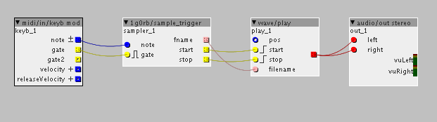

Hi everyone! My first axo object (tested only on 1.0.9 so I'm not posting it to Community library**)
It is a MIDI triggered SD card sample player. Actually it is a trigger for wave/play. It uses a text file (SAMPLER.CFG) on SD card to define which samples would be played on which MIDI note and how.
Example config (SAMPLER.CFG on SD card):
36 TRIGGER SAMPLE1.RAW
38 HOLD SAMPLE2.RAW
# comment
f#4 T SAMPLE3.RAW
A3 H SAMPLE4.RAWMIDI note 36 (C2) will trigger sample and let it play till it ends (or another sample is triggered), note 38 (D2) will play sample while the key is down and stop on release. Notes can be defined also by their name and play mode can be shortened.

sample_trigger.axo (4.3 KB)sample_trigger.h is also needed but I'm not allowed to upload it so I'm linking it.
** I've done some modifications to firmware (connecting external arduino powered display) which aren't compatible with 1.0.10 so that's why it is 1.0.9.
 .
.